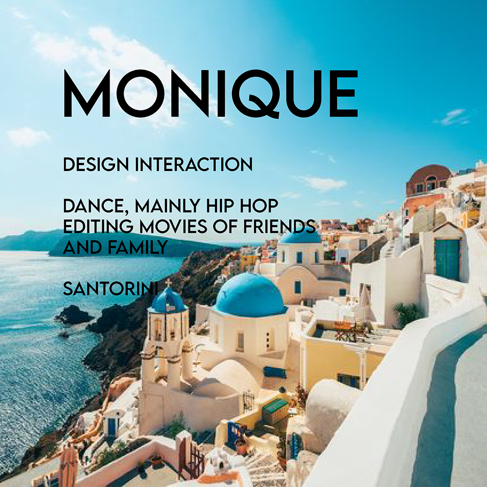

Week 1 - Welcome to web design!
In class, I was introduced to IXXN221 Web design and learnt about what the course is about, what I can be expected to learn and was briefly introduced to the assignments and class structure. We also had a mini icebreaker where we were paired up and had to create a name tag for each other.
It was advised to download Visual Studio Code for the course so that was a new programme for me - I'm used to Atom but thought I'd stick to the class standard. I think it's important to learn new types of programmes anyways and this could be useful when you go into the workforce and there's an 'industry standard' programme and you know how to use it. Another thing I learnt was how a simple shortcut like '!' can bring up the code of a basic website! (Even though it didn't work for me but I still think it's cool to know). Coding isn't new to me as I did Creative Coding I last year but I still don't feel confident enough in using it. I took this paper primarily for the design aspect but I also think it's so important to understand basic HTML and code so it makes it easier to work with engineers.. but also so you can make minor website changes if needed (if you're not using CMS or if the website requires you to go deep into the 'back end'). Being able to build your own website from scratch is probably a big industry skill to have so knowing the basics is really important. We didn't really cover too much else in terms of technicals and applying it to design. Learning the coding basics is really valuable, particularly in a technology driven world. I'm really looking forward to learning more about the ins and outs of web design, the importance of web design and how to create human-centred designs to improve human experience and interaction, how to solve their problems and I guess, how to get them to respond to your design and website in the way that we want them to. A nametag that I created for Monique, who I was buddied with.